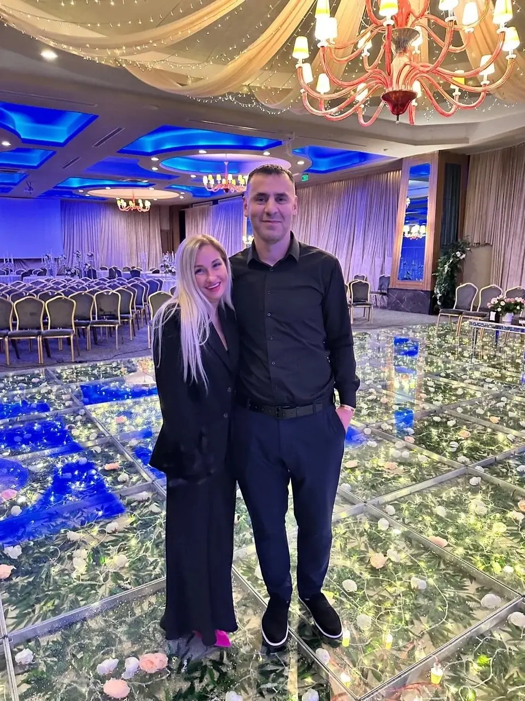

Духовное наставничество
Помогаем укрепляться в отношениях с Богом, проходить жизненные перемены и раскрывать своё призвание.
↗МЕЖДУНАРОДНОЕ ХРИСТИАНСКОЕ СЛУЖЕНИЕ
Объединяем людей из разных стран, чтобы вместе глубже познавать Бога, возрастать в вере и открывать своё призвание.
КТО МЫ
«Мистерион» — международное христианское служение, которое объединяет людей, стремящихся к глубоким отношениям с Богом и духовному возрастанию.
Мы верим, что вера преображает не только знания, но и повседневную жизнь: мышление, отношения, решения и наше отношение к людям. Через школы, конференции, молитву и общение мы создаём пространство, где человек может укрепляться в Боге, раскрывать свои дары и делиться ими с другими.
Чем мы занимаемсяГлубже открывать Его сердце и характер
Укрепляться в вере и обновлять мышление
Делать добро, поддерживать и созидать

ОСНОВАТЕЛИ СЛУЖЕНИЯ
Основатели международного христианского служения «Мистерион», пасторы, духовные наставники и учителя.
С 2008 года Эдуард и Наталья несут пастырское служение в Московском регионе, посвящая себя духовному наставничеству, обучению и поддержке людей. За годы служения они помогали многим людям и семьям глубже познавать Бога, укрепляться в вере и открывать своё призвание.
Их служение включает духовные школы, обучающие программы, молитвенные встречи и международные конференции. Они также участвуют в миссионерских поездках, в том числе в Африке, и развивают сотрудничество с церквями и служителями из разных стран.
Их видение — видеть людей, укоренённых во Христе, утверждённых в своей идентичности и раскрывающих свои дары, чтобы приносить перемены в окружающий мир.
Mysterion ✳ЧЕМ МЫ ЗАНИМАЕМСЯ
Мы создаём возможности для личного духовного роста, общения и практического служения — от наставничества до международных встреч.
Помогаем укрепляться в отношениях с Богом, проходить жизненные перемены и раскрывать своё призвание.
↗Проводим программы о познании Бога, духовном возрастании, обновлении мышления и практической жизни веры.
↗Объединяем служителей и участников из разных стран для обучения, молитвы, поклонения и общения.
↗Создаём пространство для совместной молитвы, поклонения Богу и духовного укрепления.
↗Развиваем международные связи с церквями и служителями, участвуем в миссионерских инициативах.
↗Объединяем людей разных поколений, культур и общин для поддержки, общения и совместного служения.
↗Мы верим в поколение людей, которые глубоко знают Бога, живут в своей идентичности во Христе и смело следуют за Его призванием.
ВИДЕНИЕ СЛУЖЕНИЯ «МИСТЕРИОН»НАШИ ВСТРЕЧИ
Обучение, живое общение, молитва и совместное поклонение — важная часть международного сообщества «Мистерион».
Программа для тех, кто стремится глубже познавать Бога, укрепляться в вере, обновлять мышление и развивать духовные дары. Информация о следующем потоке предоставляется командой служения.
Узнать о школеВстречи с участием международных спикеров и служителей. В октябре 2026 года конференция прошла в Аланье, Турция. Следите за анонсами новых мероприятий.
Связаться с организаторамиДЕЛИМСЯ ВАЖНЫМ
Свидетельства участников, записи проповедей, фотографии и материалы встреч помогают оставаться частью сообщества.
Реальные истории участников служения.
Учение, записи школ и конференций.
Смотреть все ↗Фотографии, видео и воспоминания.
Смотреть все ↗Здесь появятся реальные фотографии и видео служения после добавления материалов.
Мы открыты к общению с людьми из разных стран и христианских общин. Для конкретной школы или конференции условия участия могут отличаться — уточняйте информацию у команды служения.
Напишите на нашу электронную почту. Команда поделится актуальной информацией о программах и условиях участия.
Да. Мы открыты для общения с церквями, служителями и инициативами, разделяющими ценности духовного возрастания, единства и служения людям.
ВАШ СЛЕДУЮЩИЙ ШАГ
Хотите узнать о наших школах и конференциях, поделиться свидетельством или обсудить сотрудничество? Будем рады вашему сообщению.
Написать нам